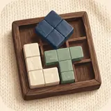
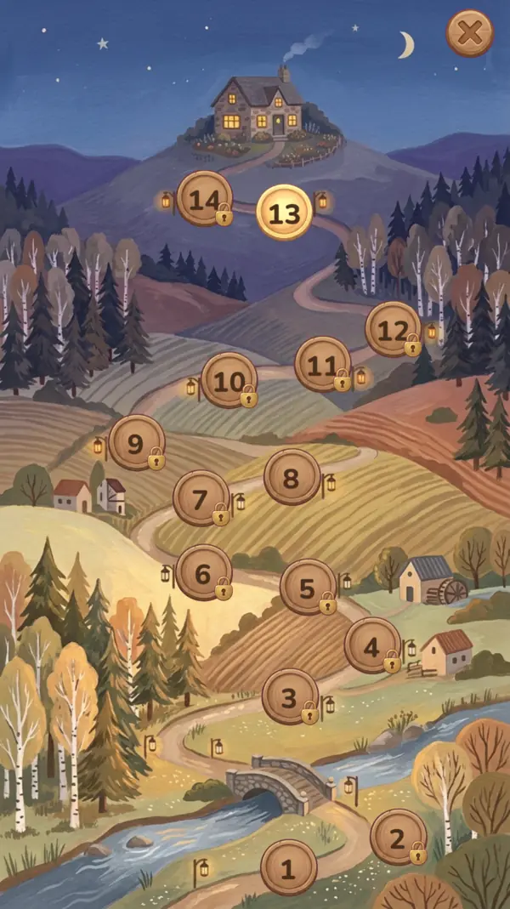

Un juego de Coffee Beans Studio
Koselig
Un acogedor rompecabezas con bandeja de madera. Encaja todas las piezas en la bandeja y tómate tu tiempo.
Próximamente en el App Store y Google Play
Un rompecabezas sin prisas
Koselig es un rompecabezas digital con bandeja de madera. Las piezas están sobre la mesa, alrededor de la bandeja: las tomas, las giras y las encajas hasta llenar todas las casillas.
Los niveles te llevan por un mapa, desde bandejas pequeñas hasta la bandeja completa. Hay más de una forma de llenar una bandeja, y también una solución más estricta, en la que no se tocan piezas del mismo color.
Cuando no tengas claro si una posición aún tiene solución, toca ¿Atascado? y el bonsái la comprobará por ti tras un video corto que eliges ver, o al instante si has comprado Sin anuncios.


Capturas de pantalla




Qué hay dentro
Tres mesas
Roble, lino y nogal, cada una con su propia vida tranquila: una vela, el vapor sobre el té, lavanda mecida por la brisa.
Bandejas y piezas
Bandejas de pino, nogal, piedra, acero, latón, olivo y cerezo. Piezas: pintura, madera, piedra, metal y terrazo.
Un mapa de niveles
Primeros pasos suaves en bandejas más pequeñas y, después, el rompecabezas completo.
El bonsái
Te ayuda con la comprobación ¿Atascado? y florece cuando resuelves un nivel.
Partidas
Tres espacios de guardado para las posiciones a las que quieras volver.
Siete idiomas
Español, English, Deutsch, Français, Italiano, Polski y Русский.
Juego limpio con los anuncios
Ni banners ni anuncios emergentes. Un video corto solo se reproduce cuando pides una comprobación ¿Atascado? y decides verlo. Una compra opcional, Sin anuncios, hace que la comprobación funcione sin videos.
iPhone y Android · español, English, Deutsch, Français, Italiano, Polski, Русский